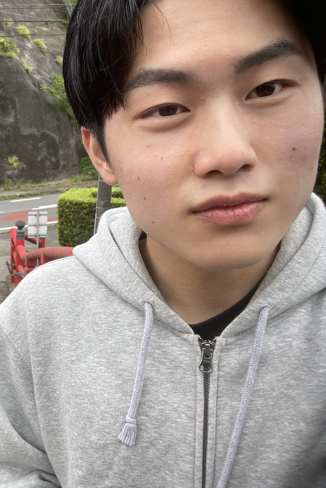

YUKI PORTFOLIO
WORKS
Document

Web


Portfolio
「ポートフォリオサイト」
portfolioサイト「Yuki portfolio」の制作。
最近トレンドのAppleで採用されている「グラスモーフィズム・ミニマルデザイン」を取り入れ、シンプルで洗練されたportfolioサイトを制作しました。
ABOUT

内山 倖徳
2006年に生まれ、千葉県で育ちました。
高校生活でデザインに興味を持ち、専門学校ではWeb制作に心を惹かれ、
Webを中心に取り組んできました。
現在、Web制作会社で勤務することを目標に就活中です。